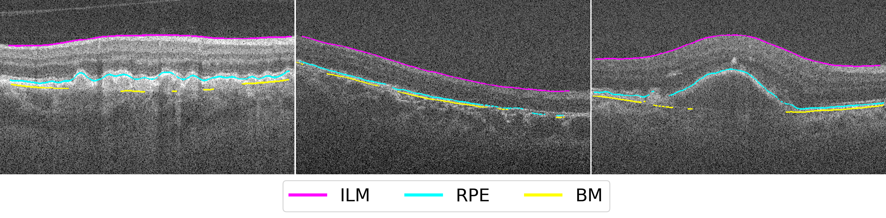
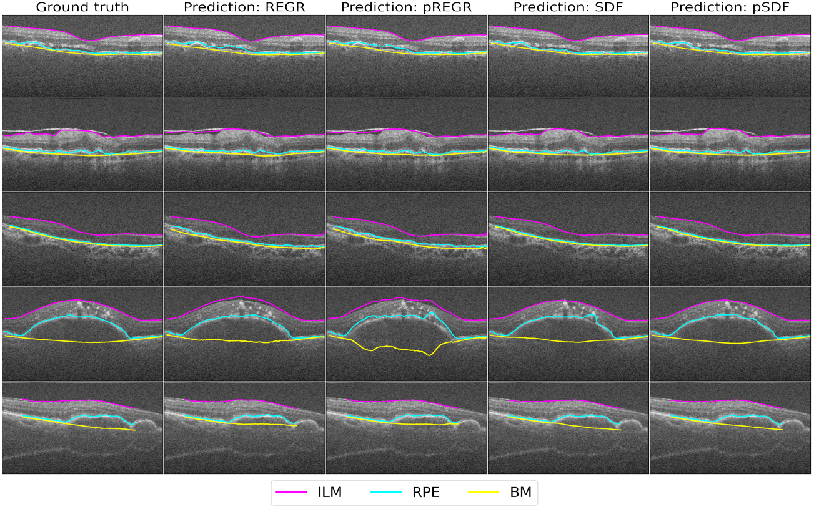
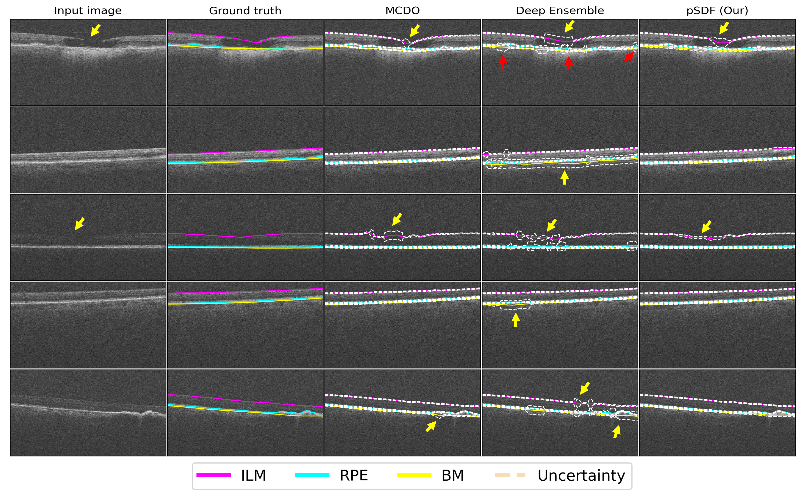
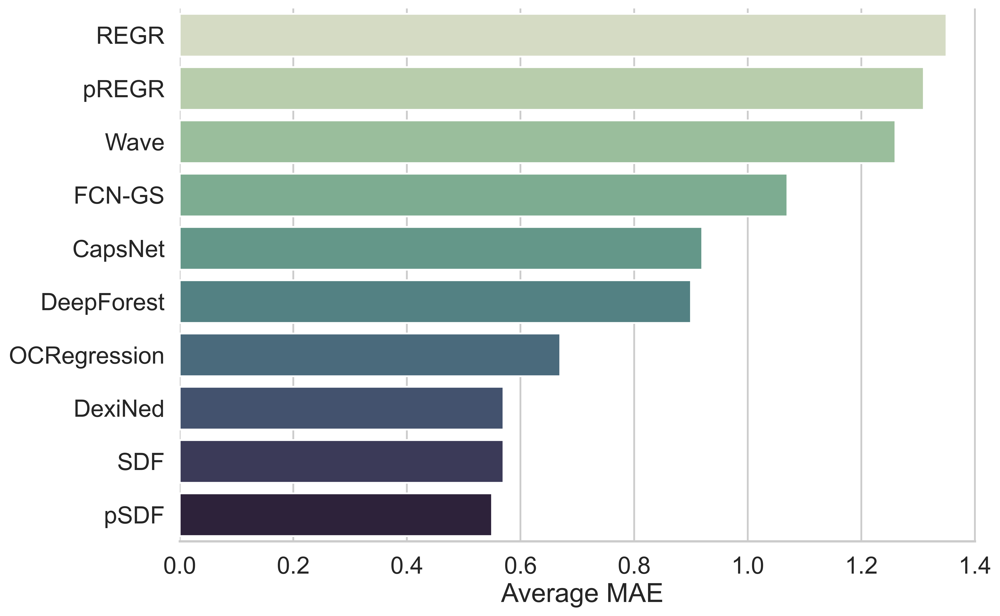

Accurately outlining the layers of the retina from OCT scans is crucial for diagnosing eye diseases, but it's a major challenge for automated systems. When layers are thin or distorted by disease, standard deep learning models often produce inaccurate or disconnected boundaries. We introduce a new method that represents retinal layers not as a collection of pixels, but as a continuous geometric shape defined by a Probabilistic Signed Distance Function (pSDF). This approach allows our model to learn the underlying morphology of the layers, leading to significantly more precise segmentations. Crucially, the probabilistic nature of our model allows it to express its own uncertainty, highlighting ambiguous or pathological regions. This provides a valuable, data-driven signal for clinicians and a key step towards automatically characterizing retinal layer integrity to track disease progression.
Traditional deep learning approaches struggle with the unique challenges of retinal OCT scans because they often fail to capture the continuous, geometric nature of the layers, leading to critical errors. Pixel-wise classification, for example, treats segmentation as a coloring problem. When layers are extremely thin—sometimes only one pixel wide—this method often fails, resulting in the broken, disconnected boundaries seen below. To fix this, regression methods predict a single Y-coordinate for each vertical column, ensuring a continuous line. However, this approach loses all geometric context by collapsing an entire column of rich data into one point, making it less accurate around complex pathological shapes.

Figure 2 : — Pixel-wise segmentation often produces broken, disconnected layer boundaries on thin structures.
We propose a new way of thinking: instead of predicting pixels, our model learns a continuous function that represents the shape of the layer boundary. This is called a Signed Distance Function (SDF). For any point $(x, y)$ in the image, the SDF tells you its exact distance to the nearest boundary. The boundary itself is simply the contour where the distance is zero. This provides a much richer, geometrically-grounded signal for the model to learn from.
But real-world medical images are noisy and pathologies create ambiguity. A single, deterministic answer isn't enough. So, we make our SDF probabilistic. The network doesn't just predict a single distance value; it predicts an entire Gaussian distribution for that distance, defined by a mean, $\mu(x,y)$, and a standard deviation, $\sigma(x,y)$. This standard deviation captures the model's uncertainty at every single point in the image.
$$ p(d(x,y) \mid I, \theta) = \mathcal{N}\!\left(\mu(x,y),\, \sigma(x,y)^2\right) $$
The elegance of this approach is that, due to a property of SDFs known as the Eikonal constraint, the uncertainty in the predicted distance ($\sigma$) directly translates into uncertainty in the layer's physical location. This gives us a powerful, principled way to identify and quantify regions where the segmentation might be unreliable.

Figure 3 — SDF-based modeling retains geometry: the layer is the zero level set; probabilistic SDF yields meaningful, spatially localized uncertainty.
Our geometric approach pays off. On both an internal dataset and a challenging external dataset from a different scanner, our pSDF method significantly outperforms regression-based techniques, achieving a 2.4× improvement in average Mean Absolute Error on the external set. The lower standard deviation also shows our predictions are more consistent and reliable.

Figure 4 — pSDF highlights ambiguous or pathological regions with higher variance and avoids spurious uncertainty seen with MCDO/Ensembles.
We also compare against prior studies on the internal dataset; while train/test splits differ, SDF-based modeling trends favor improved thin-layer fidelity and stability.

Figure 5 — MAE comparison with prior work on the internal dataset (indicative due to differing splits); lower is better.
@inproceedings{islam2024uncertainty,
title={Uncertainty-aware retinal layer segmentation in OCT through probabilistic signed distance functions},
author={Islam, Mohammad Mohaiminul and de Vente, Coen and Liefers, Bart and Klaver, Caroline and Bekkers, Erik J and S{\'a}nchez, Clara I},
booktitle={Medical Imaging with Deep Learning},
pages={672--693},
year={2024},
organization={PMLR}
}